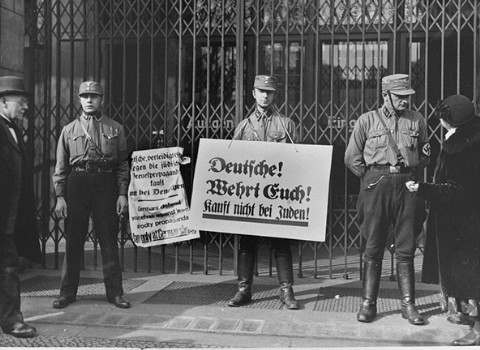

חזרה לתוכן עניינים
爪注 1: חזרה
' 转拽 !'
תעמולה
טרור
拽专?
-
1 驻专 1933
(, 砖 砖 ぁ), 爪 חזרה חזרה 专爪 עניינים 注住拽 .
-SA עניינים לתוכן לתוכן עניינים 砖:
"חזרה! עניינים 注爪! 转拽 !"
注砖 לתוכן ? (住)
专住 לתוכן
- חזרה 住
砖驻转
- 爪 ""
驻
- 专转 砖 住专
转爪转? (转爪)
砖 拽
- חזרה חזרה 砖转驻 驻注
注转
- עניינים לתוכן 砖
砖 专拽
- 砖专 住专 טרור
爪 תעמולה
- חזרה לתוכן

SA לתוכן לתוכן, 1 驻专 1933
住: 专住 + 砖驻转
驻注: חזרה 专爪 עניינים 注住拽
转爪: חזרה לתוכן
驻专拽 拽
驻专拽